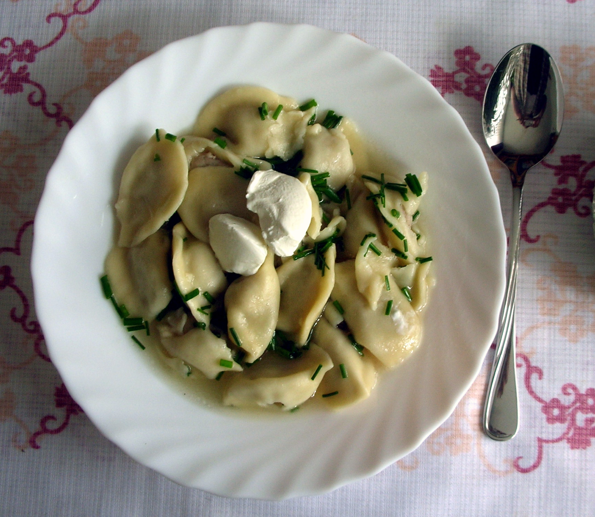

Те самые
Говядина, свинина, лук и чёрный перец. Со сметаной — как в детстве.
Сытно и по-домашнемуТонкое тесто, сочная начинка и ещё одна порция. Собираемся на кухне, лепим вместе и никуда не торопимся.
Приготовим вместе ↗
Примерно на 4 порции. Оставьте час-полтора на кухонные разговоры и сам процесс.
Смешайте ингредиенты, вымесите до гладкости и оставьте под полотенцем на 30 минут. Муку добавляйте понемногу: тесто должно быть мягким.
Соедините фарш с мелко нарезанным луком, холодной водой, солью и перцем.
Тонко раскатайте тесто, вырежьте кружки. Положите начинку, крепко защипните края и соедините уголки.
Варите в подсоленной воде при умеренном кипении до полной готовности мясной начинки. Время зависит от размера пельменей. Подавайте горячими.
Остальное — дело рук.
Выбрать начинку ↑